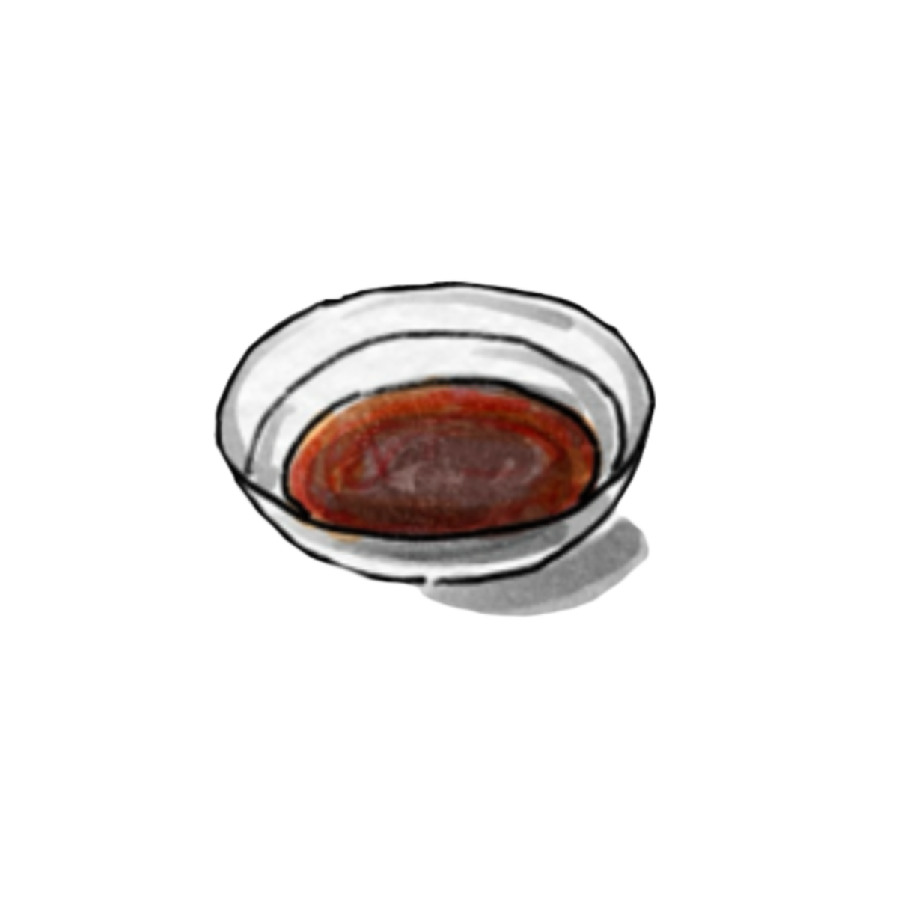
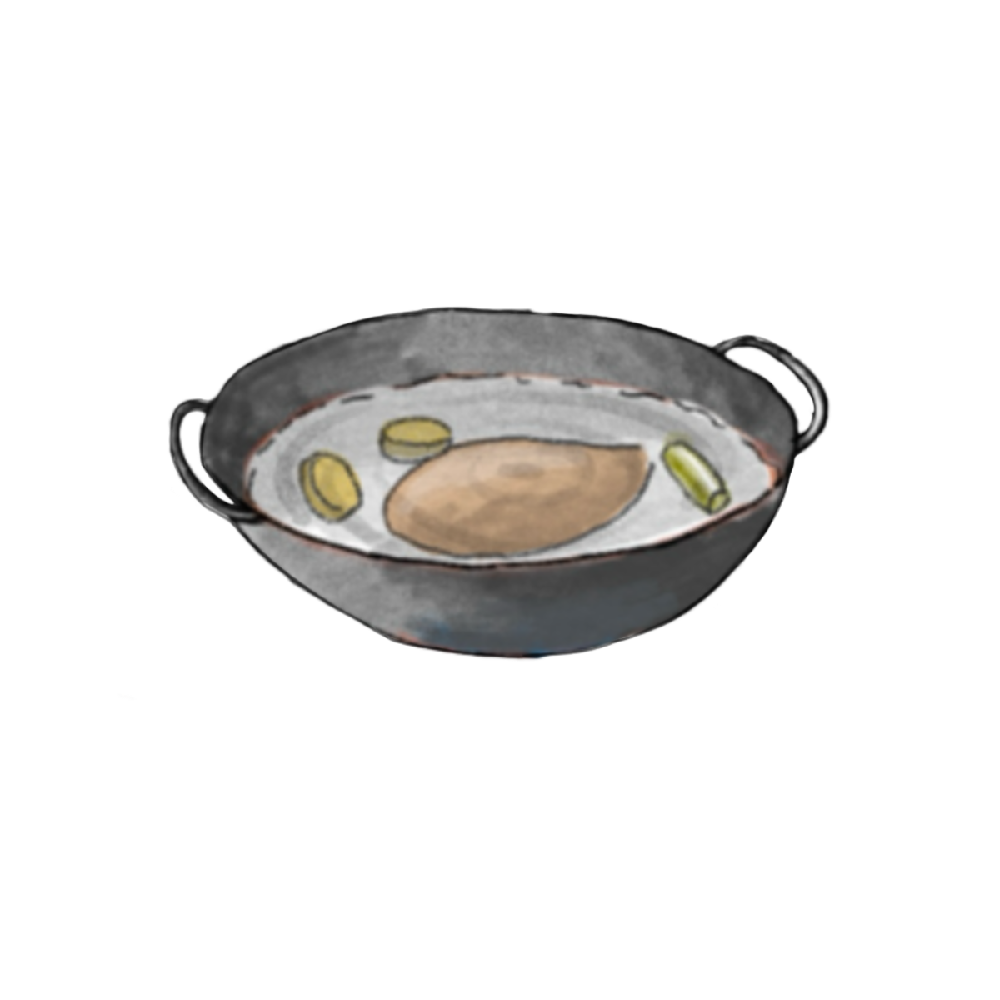
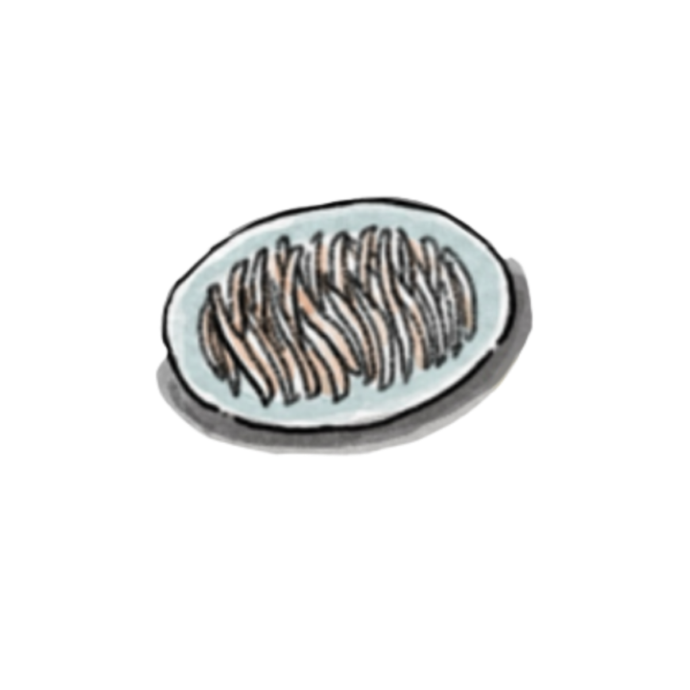
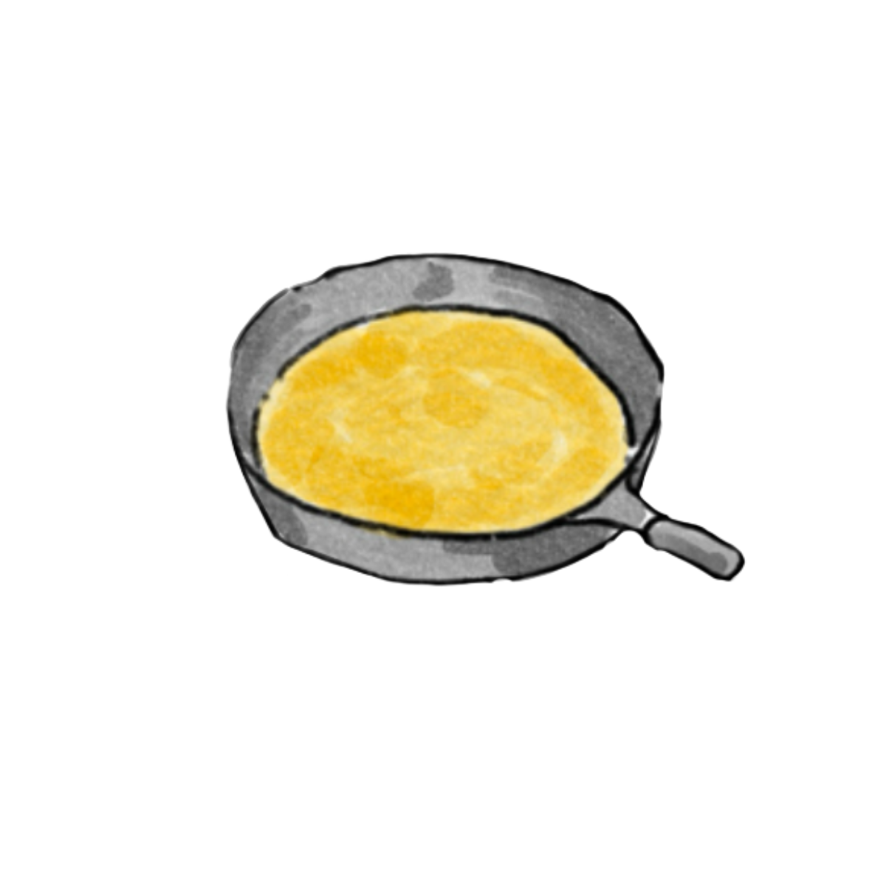
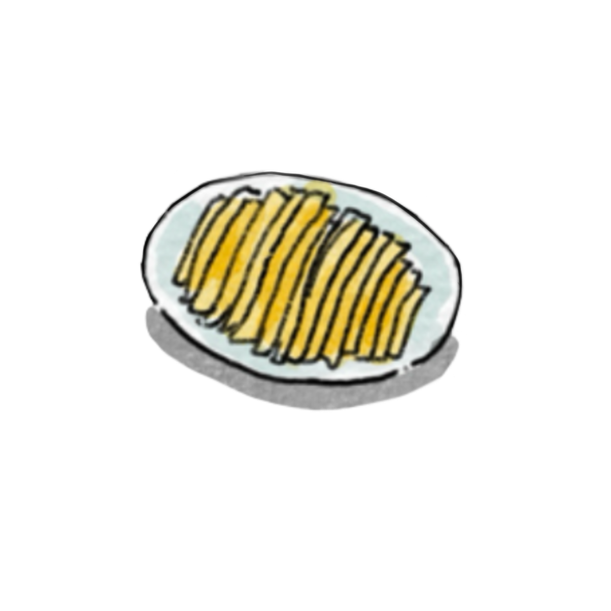
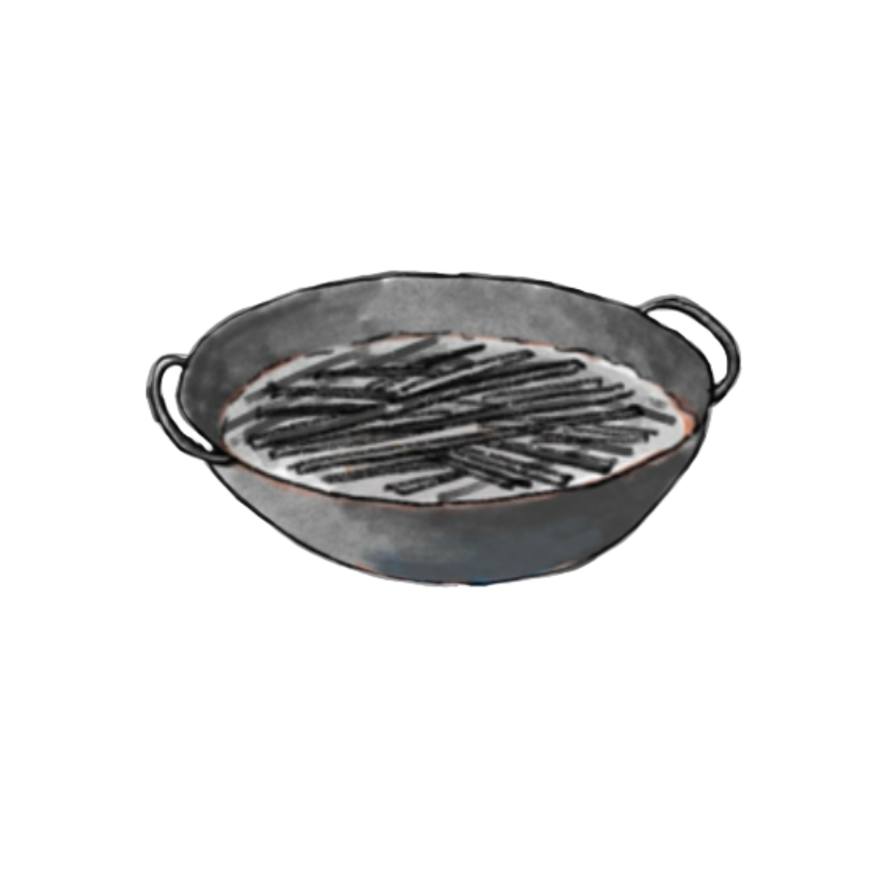

Let's get ready to cook

Step 1
Mix together a small amount of minced garlic, one tablespoon of soy sauce, one tablespoon of vinegar, a pinch of salt, an appropriate amount of chili oil, a dash of sesame oil, and two tablespoons of sesame paste. Add a small amount of water and stir until smooth.

Step 2
Place the chicken breast in a pot of cold water, add a few slices of ginger and sections of green onion, then remove and rinse with cold water.

Step 3
Shred the cooled chicken breast into thin strips by hand and set aside.

Step 4
Crack two eggs and beat the egg mixture until smooth. Cook the eggs until scrambled, then let them cool.

Step 5
Once cooled, cut the egg omelet into thin strips and set aside.

Step 6
Boil water in a pot, and once it reaches a rolling boil, add the soba noodles. Cook for 5 minutes, then remove and rinse under cold water to make them more refreshing. Toss the noodles with the prepared cucumber strips, carrot strips, and egg strips, then add the sauce and mix well.